"A paz mundial começa na cozinha."
O Sazonal é um espaço dedicado a celebrar o ritmo da natureza. Aqui, ensinamos você a identificar e aproveitar os hortifrutis no auge de sua estação, garantindo frescor e nutrientes em cada escolha. Além de apresentar os ingredientes típicos de cada época, compartilhamos receitas exclusivas pensadas para honrar os sabores de cada temporada, transformando o que a terra oferece agora em pratos inesquecíveis e cheios de história.
Hortifruti da Estação - Frutas 🍎
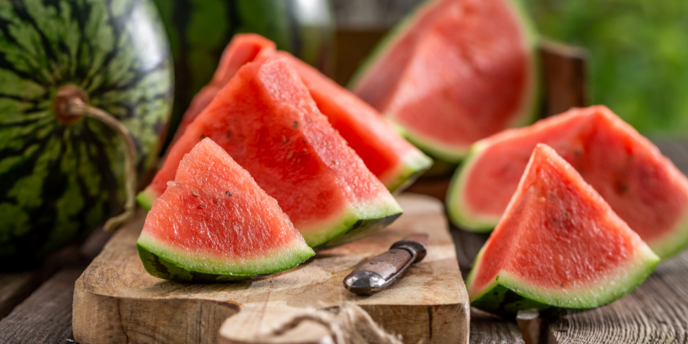
VerãoMelancia
A rainha do verão, composta por mais de 90% de água.
 Verão
Verão
Abacaxi
Refrescante e ótimo para a digestão.
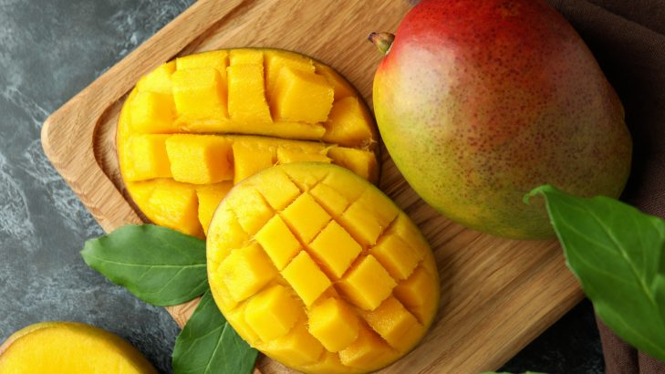
VerãoManga
Está no auge da doçura (Palmer, Rosa e Espada).
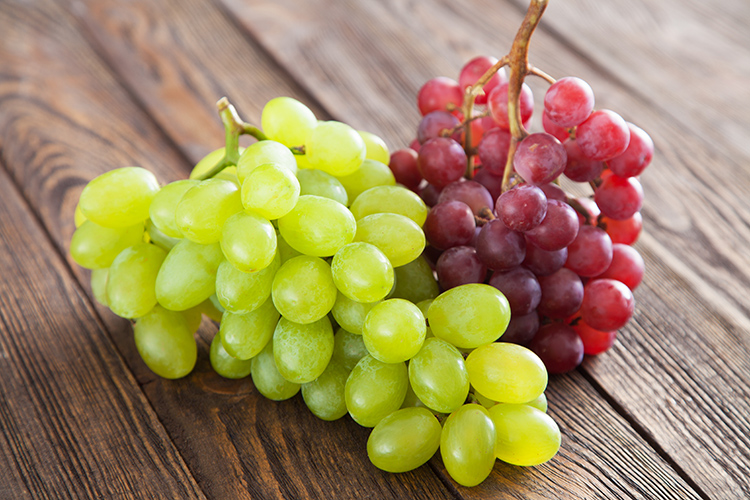
VerãoUva
Principalmente as variedades de mesa.
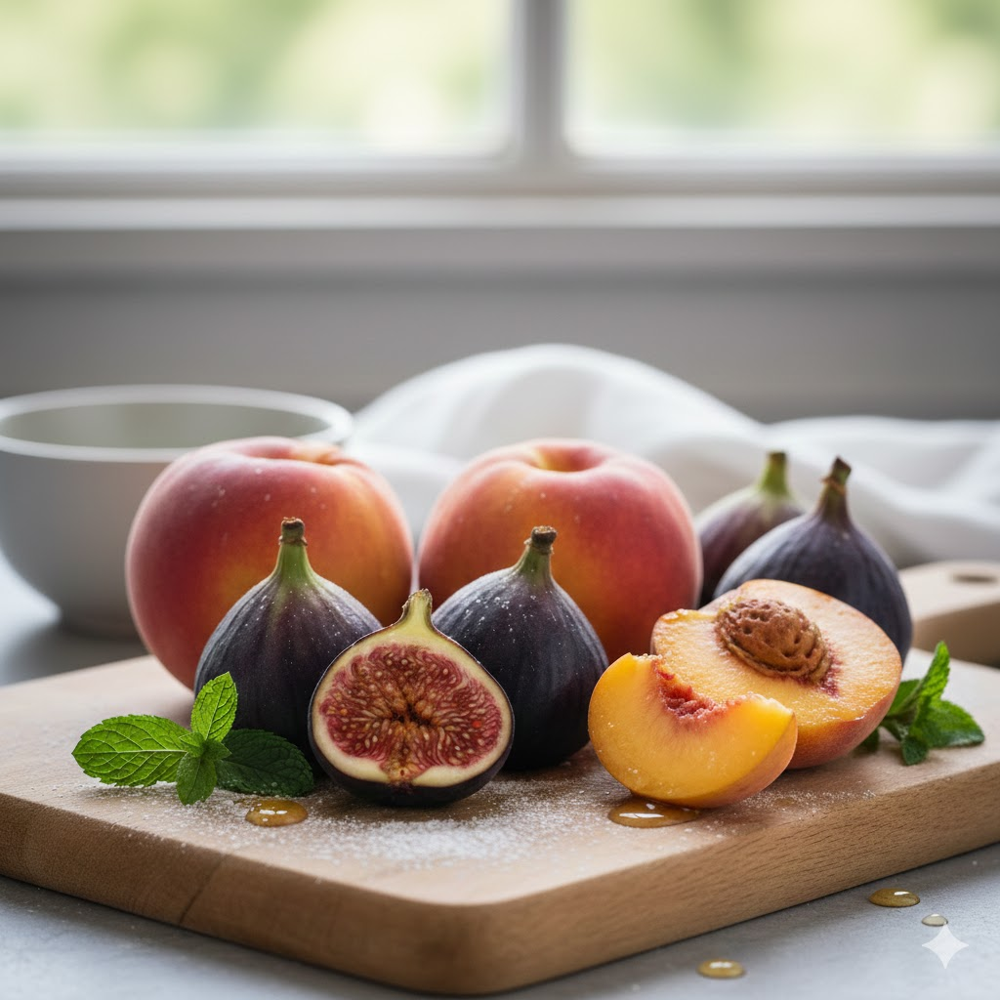
VerãoFigo e Pêssego
Frutas clássicas desta transição de ano.
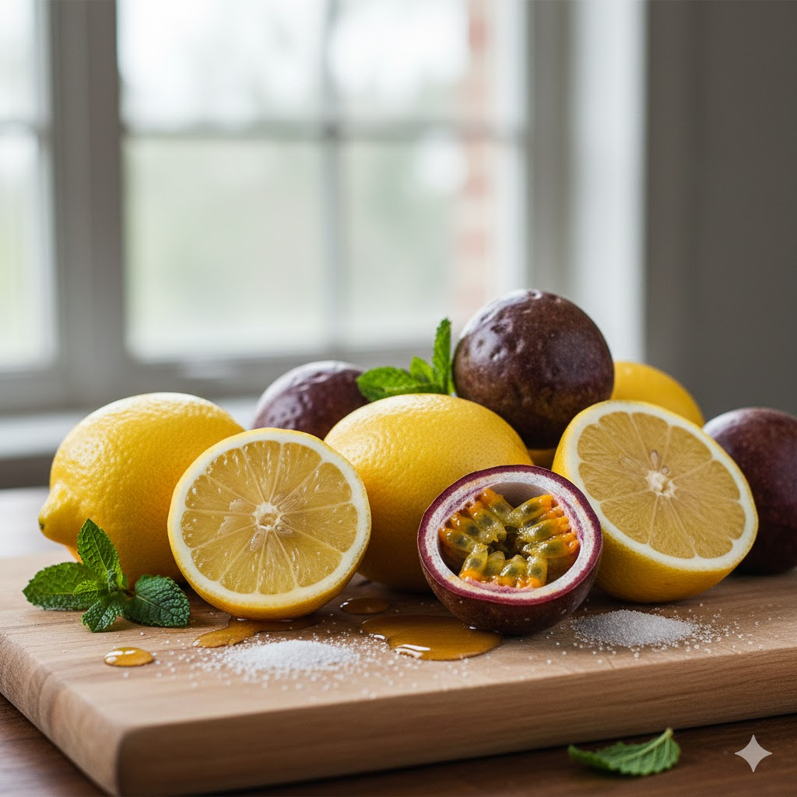
VerãoLimão e Maracujá
Perfeitos para sucos e receitas cítricas.
Legumes e Verduras 🥦
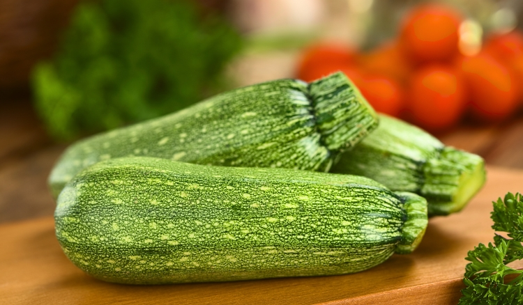
VerãoAbóbrinha
Leve e versátil.
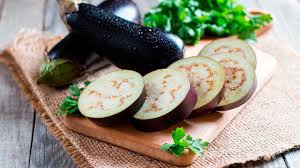
VerãoBeringela
Ótima para grelhados e antepastos.
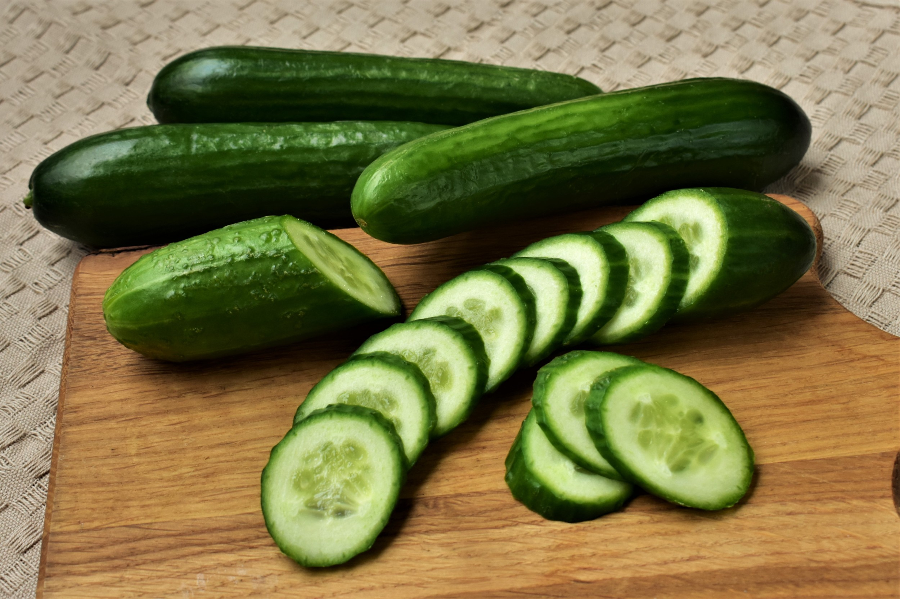
VerãoPepino
Extremamente refrescante para saladas.
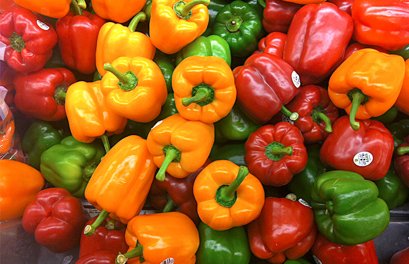
VerãoPimentão
(Verde, amarelo e vermelho) ficam mais carnudos e saborosos.
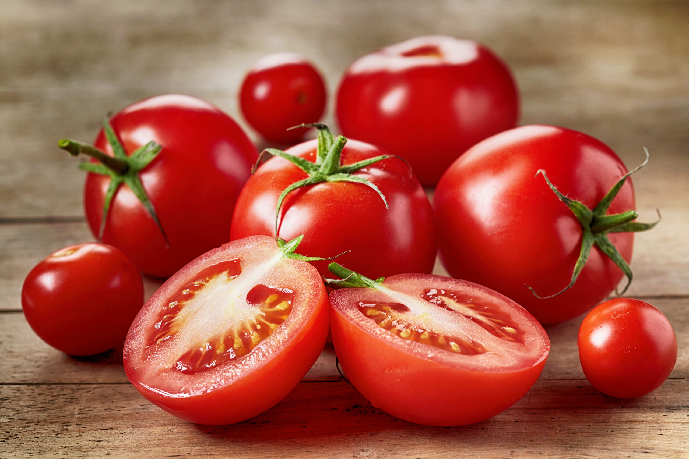
VerãoTomate
No verão, eles ficam mais vermelhos e doces.
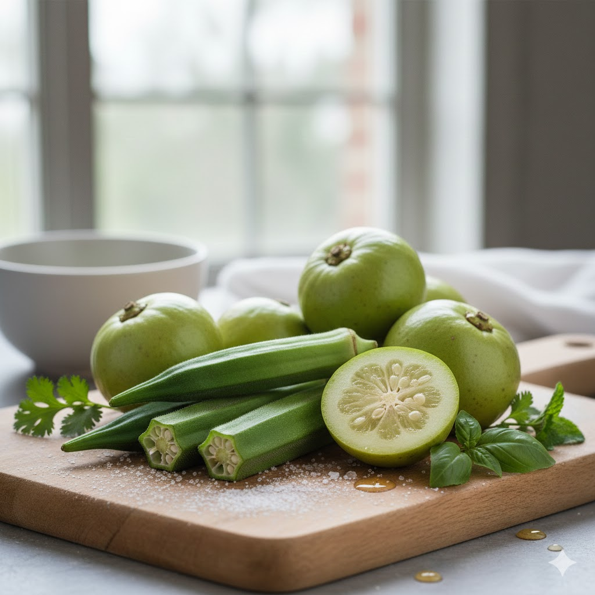
VerãoQuiabo e Jiló
Também são típicos desta temporada de calor.
Receitas da Estação 🥘
 Verão
Verão
Ceviche de Manga e Cebola Roxa
Mini Descrição: Uma versão tropical e refrescante. A doçura da manga madura contrasta com a acidez do limão e o toque picante da cebola roxa.
Ver Receita
 Verão
Verão
Espaguete de Abobrinha ao Pesto
Mini Descrição: Leveza em forma de massa. Lâminas finas de abobrinha da estação servidas com um pesto artesanal de manjericão fresco e nozes.
Ver Receita
 Verão
Verão
Gazpacho de Tomates Maduros
Mini Descrição: A clássica sopa fria espanhola. Uma mistura vibrante de tomates colhidos no sol, pepino e pimentões, servida gelada.
Ver Receita
 Verão/Outono
Verão/Outono
Risoto de Abóbora com Sálvia
Mini Descrição: O encontro da cremosidade da abóbora cabotiá com o aroma inconfundível da sálvia fresca. Um prato sofisticado e reconfortante.
Ver Receita
 Verão
Verão
Salada de Melancia e Hortelã
Mini Descrição: A definição de hidratação. Cubos suculentos de melancia gelada finalizados com folhas de hortelã e um fio de azeite extra virgem.
Ver Receita
 Verão
Verão
Torta Mousse de Limão Siciliano
Mini Descrição: Sobremesa cítrica e aveludada com base de castanhas e tâmaras. O frescor do limão siciliano para encerrar o dia com leveza.
Ver Receita